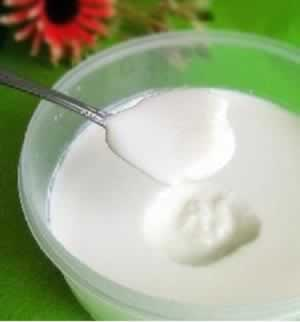
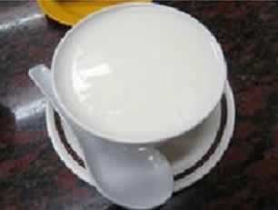

准妈妈适合牛奶酸奶交替喝
怀孕期间如果准妈妈的钙摄入不足，胎儿需要的钙就会从母体的骨髓、牙齿中夺取，以满足胎儿期生长的营养所需，从而导致准妈妈发生小腿抽筋等症状，所以孕期准妈妈需重视补钙。准妈妈补钙的最好方法是每天喝一袋牛奶（一般约200-400克），牛奶中的钙最容易被人体所吸收，而且磷、钾、镁等多种矿物质搭配也十分合理。乳糖不耐受的准妈妈，则可以选择酸奶代替牛奶来补钙。有些准妈妈会问，是喝纯牛奶好，还是酸奶好呢？牛奶与酸奶各有所长，牛奶是优质蛋白的重要来源，而酸牛奶是鲜奶经过乳酸菌发酵制成的，有抑制腐败菌繁殖、减少它在肠道中产生毒素的作用。准妈妈在选择奶制品时，可以牛奶和酸奶交替喝。牛奶可作为早餐搭配食用，或可晚间入睡前喝一杯热牛奶；饮用酸奶最佳的时间段是饭后30分钟到2个小时，此时胃液被稀释，最有利于吸收酸奶中的营养。
最后还要提醒准妈妈，无论是喝牛奶也好，还是喝酸奶也好，准妈妈须切记，要适量不过量。
本周推荐尝试食谱1：
电饭煲做酸奶
推荐理由：酸奶酸甜细腻，促进食欲，准妈妈也可以学着自制酸奶。食谱原料：
牛奶500g，原味酸奶50g，开水、清水适量。
制作方法：
1、电饭锅中加入清水，加热至锅壁稍稍烫手，将500g牛奶倒入保鲜盒中，坐入电饭锅的热水中，盖上锅盖，将牛奶加热至温热；
2、将装牛奶的保鲜盒从电饭锅中取出，重新盖上锅盖，往牛奶中加入酸奶50g；
3、用小勺将牛奶和酸奶搅拌均匀；
4、将保鲜盒的盖子盖好；
5、将保鲜盒放入电饭锅中，盖上锅盖，断电，发酵12小时即可。
本周推荐尝试食谱2：
双皮奶
推荐理由：双皮奶是北京名吃，酸甜可口，全家老少皆宜。
食谱原料：
一大碗牛奶（400ml左右），蛋清2只，白砂糖2勺。
制作方法：
1、先把牛奶倒入锅中，煮到刚刚沸腾即可（烧久了会破坏蛋白质，也结不起奶皮了），然后再倒入大碗，这时可以看到牛奶表面结起一层皱皱的奶皮；
2、拿一个空的大碗中放入二只蛋清、二勺糖，搅匀至糖溶解（不要打太久，否则变蛋泡了)；
3、等牛奶稍凉后，用筷子把奶皮刺破，再将牛奶慢慢倒入装有蛋清的大碗，搅拌均匀，再沿碗边缓缓倒回留有奶皮的大碗，可以看到奶皮会自己浮起来；
4、最后将牛奶放入锅中隔水蒸10分钟左右，用筷子从中间刺入，没有牛奶流出说明全部凝结起来了，大功告成！